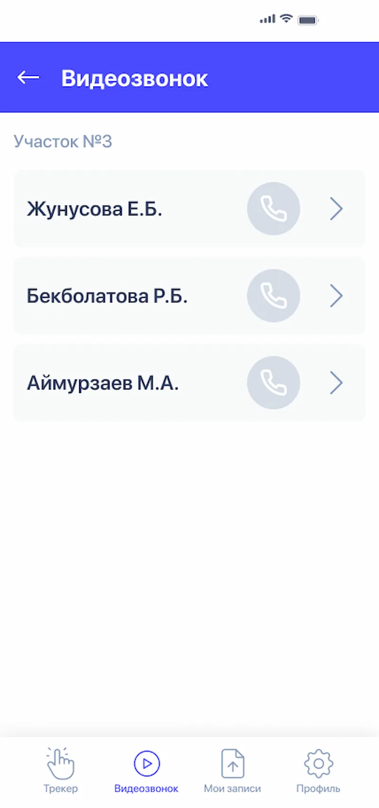
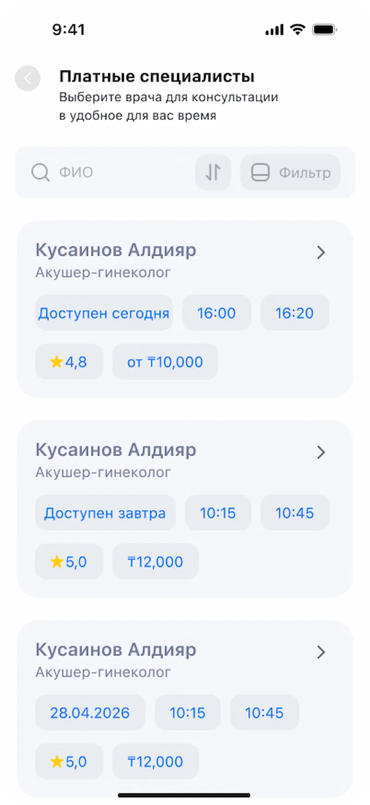
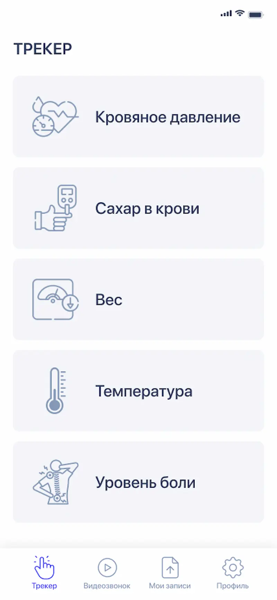

01 · Context
Before I joined.
The previous designer had worked only on the patient app. The visuals were overloaded — heavy type, flat illustrations, aggressive purple, small text. For a medical product where the audience runs from teenagers to retirees, that didn't work.
The bigger problem was that there was no system. Every screen lived by its own rules. Once the doctor's panel, telemedicine, and surveys were added to the scope, it was clear: we had to start from scratch.
Before

After

Before

After